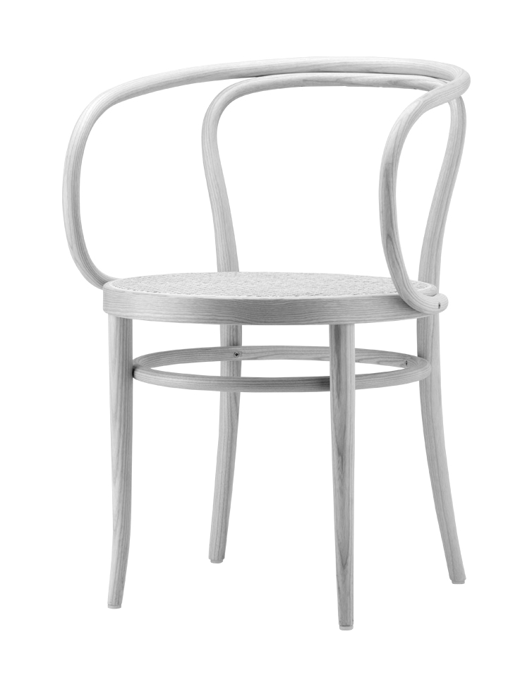

- Hi! I like this design.
- What specifically attracts you to this chair design? I notice it has those beautifully bent wood elements that create a continuous flowing line from the backrest to the armrests.
- I’m drawn to how noodle-y it looks. It’s playful yet elegant!
- I love your description of it as “noodle-y”! The way the wood bends and flows without interruption creates that playful character you’ve noticed, while still maintaining an elegant presence. Do you think it's the smoothness of the curves or the rhythmic repetition of the lines that gives it that playful quality?
- I think it’s in the way the curved lines traverse across different parts of the chair, tying it together to create a story. What do you think about this linear narrative?
- That’s very perceptive! Those curved lines do more than just connect physical elements—they create a visual journey through the chair's form. It's almost as if the designer wanted us to experience the chair as a single gesture rather than separate parts. Do you feel this narrative quality makes the chair more inviting or more sculptural?
- This narrative definitely invites closer inspection. There's something else about the nature of curve that feels amiable. I can't quite find the right word.
- There's a certain warmth and hospitality in organic curves. Perhaps what you’re sensing might be described as “haptic invitation”—the way these gentle curves seem to welcome touch and interaction. The curves have a natural ergonomic quality that resonates with our bodies and movement patterns, creating an immediate sense of comfort even before physical contact.

bends and flows
noodle-y, playful yet elegant
smoothness of the curves
rhythmic repetition
curved lines traverse across different parts, together to create a story
single gesture, linear narrative
haptic invitation